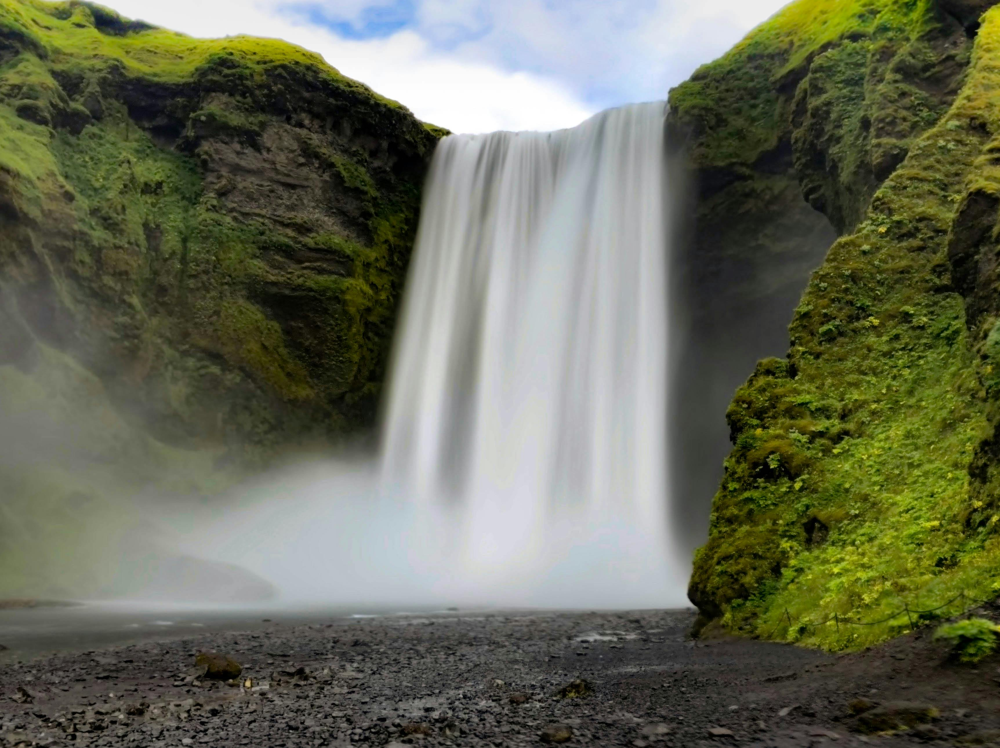

Our planet is home to countless breathtaking natural landscapes — from thundering waterfalls and towering mountains to colorful coral reefs and the dazzling northern lights. These wonders showcase the Earth's incredible beauty and remind us of the importance of preserving our natural world.


Learn more about natural wonders on the Wikipedia: List of Natural Wonders .